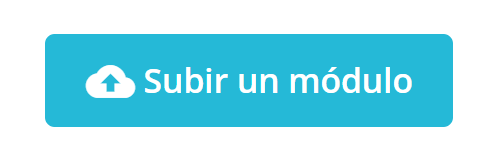
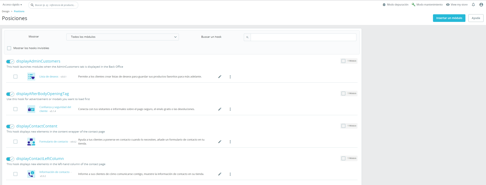

Índice Interactivo
- 1. Introducción
- 2. Gestión de tus Módulos
- 3. Personalización del Diseño de tu Tienda
- 4. Detalles de Personalización de Diseño
- 5. Gestión de Tema y Logo
- 6. Páginas,Contenido Estático y Correo
- 7. Posiciones y Módulos
- 8. Posiciones en el Front Office
- 9. Configuración de Imágenes en PrestaShop
- 10. Widgets en PrestaShop 1.7
1. Introducción
A medida que tu tienda y tu negocio evolucionan, querrás añadir nuevas funcionalidades o explorar nuevos mercados. Esta sección trata sobre cómo personalizar tu tienda para que se ajuste a las necesidades de tu negocio, incluyendo nuevos módulos, idiomas, métodos de pago, y más.
Objetivos de la Personalización:
- Adaptar tu tienda a las necesidades actuales.
- Ampliar tu alcance con nuevas funciones.
2. Gestión de tus Módulos
PrestaShop incluye una serie de módulos que puedes instalar, desinstalar y configurar para personalizar y mejorar tu tienda según tus necesidades específicas.
Módulos y Servicios
La página de Módulos y Servicios está organizada en tres pestañas para facilitar su gestión:
- Selección: Descubre e instala nuevos módulos.
- Módulos Instalados: Administra y configura tus módulos.
- Notificaciones: Revisa alertas importantes.
Descubriendo y Instalando Módulos
Manual de Usuario: Selección de Módulos en PrestaShop
La sección Selección de Módulos permite encontrar e instalar nuevos módulos para mejorar tu tienda, ya sea al comenzar o al expandir tu negocio.
¿Qué es un Módulo Incorporado?
Los módulos incorporados están disponibles desde la configuración inicial de tu tienda. Algunos vienen preinstalados y son esenciales para el comercio electrónico.
Instalación Manual de Módulos
Subida mediante el formulario:
- Haz clic en "Subir un módulo" y selecciona el archivo comprimido (.zip o .tar.gz). 
- El sistema subirá el archivo, lo descomprimirá y lo instalará automáticamente.
- Recibirás una confirmación: "¡Módulo instalado!".
2. Gestión de tus Módulos
Gestión de Módulos PrestaShop incluye una serie de módulos que puedes instalar, desinstalar y configurar para personalizar y completar tu tienda según tus necesidades específicas. Flexibilidad Total: Puedes adaptar la tienda a tu visión sin limitaciones impuestas, siempre que encuentres el módulo adecuado. Evolución Continua: La sección de módulos del panel de administración se está actualizando desde la versión 1.7.5. No te preocupes, las nuevas funciones seguirán siendo intuitivas y fáciles de usar. Secciones Importantes: Módulos y Servicios Catálogo de Módulos Nota: Espera más detalles cuando las actualizaciones estén completamente implementadas.
Módulos y Servicios
La página de Módulos y Servicios en PrestaShop 1.7 está organizada en tres pestañas para facilitar la gestión de tus módulos:
Selección: Descubre e instala nuevos módulos para mejorar tu tienda, ideal para cuando estás iniciando o expandiéndote.
Módulos Instalados: Administra y configura tus módulos diariamente. Notificaciones: Revisa alertas importantes sobre módulos que requieren actualizaciones o ajustes para un funcionamiento óptimo. Funcionalidades Clave Conexión a Addons: Accede a módulos adicionales desde la plataforma oficial. Subir un módulo: Carga y gestiona módulos personalizados fácilmenteSe divide en tres pestañas:
modulos de selecion
modulos instalados
modulos notificaciones
Descubriendo y Instalando Módulos
Manual de Usuario: Selección de Módulos en PrestaShop
La sección Selección de Módulos te permite encontrar e instalar nuevos módulos para mejorar tu tienda, ya sea al comenzar o al expandir tu negocio.
Explicación: Módulos y Servicios
Módulos: Añaden funciones a tu tienda, como métodos de pago, sincronización de inventario, o herramientas de exportación. Se deben instalar manualmente en tu tienda a partir de un archivo descargado.
Servicios: Son intangibles y no requieren instalación directa. Por lo general, implican un acuerdo o contrato con un proveedor externo.
¿Qué es un Módulo Incorporado?
Los módulos incorporados están disponibles desde la configuración inicial de tu tienda. Algunos ya vienen preinstalados para garantizar el funcionamiento básico y puedes optar por usarlos o no según tus necesidades. Son gratuitos y esenciales para el comercio electrónico.
Instalación Manual de Módulos
Subida mediante el formulario:
Haz clic en "Subir un módulo" en la parte superior de la página. Se abrirá una ventana emergente donde puedes cargar el archivo comprimido del módulo (formatos aceptados: .zip o .tar.gz). Arrastra el archivo aquí o selecciona el archivo descargado mediante el botón "seleccionar archivo". Importante: No cargues carpetas descomprimidas, solo el archivo comprimido.
Proceso de Instalación:
Una vez detectado el archivo, la instalación comienza automáticamente. El sistema subirá el archivo, lo descomprimirá, ubicará los archivos correctamente y actualizará la página. Aparecerá un mensaje confirmando: "¡Módulo instalado!". Con esta guía, podrás personalizar tu tienda de forma rápida y eficiente.
Manual de Usuario: Gestión de Módulos en PrestaShop
Gestión de Módulos
PrestaShop incluye una serie de módulos que puedes instalar, desinstalar y configurar para personalizar y completar tu tienda según tus necesidades específicas.
Flexibilidad Total: Puedes adaptar la tienda a tu visión sin limitaciones impuestas, siempre que encuentres el módulo adecuado.
Evolución Continua: La sección de módulos del panel de administración se está actualizando desde la versión 1.7.5. No te preocupes, las nuevas funciones seguirán siendo intuitivas y fáciles de usar.
Manual de Usuario: Gestión de Módulos Instalados en PrestaShop
Página de Módulos Instalados
Aquí puedes instalar, desinstalar, configurar y actualizar los módulos de tu tienda. La pestaña "Módulos Instalados" facilita la gestión diaria de estos.
Secciones de la Lista de Módulos
Módulos Instalados: Módulos que has añadido, comprados en PrestaShop Addons o cargados manualmente.
Módulos Incorporados: Módulos básicos y gratuitos que vienen preinstalados con tu tienda.
Módulos del Tema: Módulos asociados a los temas que hayas instalado.
Opciones de Búsqueda y Filtros:
Campo de búsqueda: Busca módulos por nombre, autor o palabras clave.
Ordenar: La lista se actualiza automáticamente al aplicar filtros.
Categorías: Muestra módulos según la categoría seleccionada.
Mostrar todos los módulos: Filtra entre módulos habilitados y deshabilitados.
Instalados y No Instalados: Encuentra módulos según su estado.
Último acceso: Localiza rápidamente los módulos usados recientemente.
Nombre: Ordena alfabéticamente de A a Z.
Estado de los Módulos
1. No instalado
2. Instalado pero desabilitado
3. Instalado y habiliado
4. Instalado y habilitado, pero con advertencias
Deshabilitar vs Desintalar
Deshabilitar:Mantiene la configuración del módulo para una futura reactivación.
Desintalar:Elimina la configuración y los datos del módulo, borrando todos sus archivos. Úsalo solo si no necesitas conservar la información.
Importante;Desinstala un módulo solo si estas seguro de que no lo necesitaras nuevamente.
Acciones disponibles
Para Módulos No instalados
Instalar: Añade y habilita automáticamente el módulo
Para Módulos Instalados:
Actualizar: PrestaShop buscará actualizaciones y las instalará.
Habilitar: Activa el módulo deshabilitado.
Habilitar en móvil: Permite que el módulo funcione solo en dispositivos móviles.
Configurar: Accede a las opciones de configuración del módulo.
Deshabilitar: Desactiva el módulo sin perder su configuración.
Deshabilitar en móvil: Desactiva el módulo en dispositivos móviles.
Restablecer: Devuelve el módulo a su configuración predeterminada.
Desinstalar: Desactiva y puede eliminar todos los archivos y datos si se elige "Eliminar carpeta del módulo tras desinstalar".
Desintalación Correcta de Módulos
Nunca elimines un módulo directamente desde su carpeta usando un cliente FTP. Usa las opciones de PrestaShop para gestionarlo.
Deshabilitar:Útil si deseas pausar temporalmente el módulo manteniendo su configuración.
Desinstalar:El módulo queda sin impacto, pero su carpeta permanece en el servidor.
Eliminar:Borra completamente la carpeta y archivos del módulo de tu servidor.
Precaución:Asegúrate de que deshabilitar o eliminar un módulo no afecte el diseño o funcionalidad de tu tema.
Ver tutorial de manejor de Módulos
Manual de Usuario: Personalización del Diseño de tu Tienda en PrestaShop
7. Detalles de Personalización de Diseño
Secciones de Personalización
1. Tema y Logo: Configura el aspecto visual de tu tienda, eligiendo temas que representen tu marca y ajustando tu logotipo.
2. Catálogo de Temas: Explora y selecciona nuevos temas para renovar el diseño de tu tienda.
3. Tema de Correo Electrónico: Personaliza los correos electrónicos automáticos que reciben tus clientes, asegurando coherencia visual con tu tienda.
4. Páginas - Gestión de Contenido Estático: Administra y edita el contenido estático, como páginas de información o términos y condiciones.
5. Posiciones: Configura la posición de los módulos para optimizar la disposición y el diseño general.
6. Configuración de Imágenes: Ajusta los tamaños y formatos de las imágenes para garantizar una mejor presentación visual.
7. Widget de Enlaces: Crea y administra widgets de enlaces personalizados para facilitar la navegación de los usuarios.
NOTA: Con estas herramientas, puedes ajustar todos los aspectos visuales y de contenido para ofrecer una experiencia de compra atractiva y consistente.
Manual de Usuario: Personalización de Tema y Logo en PrestaShop
8. Gestión de Tema y Logo
En la página de "Tema y Logo" puedes administrar de manera eficiente tus temas y actualizar el logotipo de tu tienda.
Soporte para Idiomas de Escritura de Derecha a Izquierda (RTL)
PrestaShop admite idiomas que se escriben de derecha a izquierda, como árabe, hebreo y persa.
Personalización de Logos
Puedes modificar diferentes logos de tu tienda:
1. Logo de Encabezado: Visible en todas las páginas de tu tienda.
2. Logos de Factura y Correo Electrónico: Aparecen en notificaciones de correo y facturas.
Favicon: Pequeño icono mostrado en la barra de direcciones del navegador.
NOTA: En modo multitienda, puedes aplicar cambios a todas las tiendas o a grupos específicos.
Puedes modificar diferentes logos de tu tienda:
1.Logo de Encabezado:Visible en todas las páginas de tu tienda.
2.Logos de Factura y Correo Electrónico:Aparecen en notificaciones de correo y facturas.
Favicon:Pequeño icono mostrado en la barra de direcciones del navegador. Es recomendable cambiar el favicon predeterminado por el tuyo propio.
NOTA:En modo multitienda, puedes aplicar cambios a todas las tiendas o a grupos específicos.
Detalles de Tu Tema Actual
Sección informativa que muestra: Nombre y versión del tema. Autor del tema. Vista previa del tema.
Configuración de Diseño de Páginas
Puedes personalizar la estructura de las páginas según las opciones de tu tema:
Sin columnas:Diseño de pantalla completa para páginas sin distracciones.
Tres columnas:Columna central grande con dos columnas laterales.
Dos columnas con columna pequeña izquierda o derecha:Diseño más versátil.
Para ajustar un diseño, selecciona "Elegir diseños", realiza los cambios y haz clic en "Guardar". Para revertir los cambios, presiona "Restablecer a los valores predeterminados".
Seleccionar un Tema
Si tienes varios temas instalados, puedes ver y gestionar los temas disponibles. Opciones:
Usar este tema:Cambia al tema seleccionado.
Cambia al tema seleccionado.Borra los archivos del tema del servidor.
NOTA:En modo multitienda, debes elegir un tema por tienda individualmente.
Agrega un Tema
Haz clic en "Agregar nuevo tema" y elige uno de estos métodos:
Desde tu computadora:Carga un archivo zip
Desde la webProporciona una URL directa al archivo Zip.
Desde FTP:Sube el archivo a la carpeta /themes/ mediante un cliente FTP.
Haz clic en "Guardar" para instalar el tema. Una página de confirmación mostrará los cambios aplicados.
Exportar un Tema
Esta función permite crear un archivo Zip del tema actual, incluyendo módulos personalizados. Haz clic en "Exportar tema actual" y guarda el archivo para realizar copias de seguridad o compartirlo.
Configuración de Páginas
El módulo "Personalización de Temas" permite modificar fácilmente páginas como la página de inicio, categorías y productos. Selecciona la parte a modificar para ver los módulos relacionados y configúralos según tus necesidades.
Personalización Avanzada: Temas Padre e Hijo
PrestaShop 1.7 introduce los temas hijo para realizar modificaciones sin afectar las actualizaciones del tema principal. Configura un tema hijo en la carpeta /themes y define el tema padre en el archivo theme.yml. Para más detalles técnicos, consulta la documentación para desarrolladores.
Crear un Tema Hijo
1.Asegúrate de que el tema principal esté en la carpeta /themes.
2.Crea una carpeta nueva con archivos mínimos copiados del tema padre.
3.Configura el archivo theme.yml para especificar el tema padre.
¡Ahora puedes personalizar tu tienda con seguridad y flexibilidad!
Cátalogo de temas
Si deseas un nuevo diseño para tu tienda, visita PrestaShop Addons, el mercado oficial para temas y módulos de PrestaShop. Aquí puedes explorar los diseños más populares y encontrar inspiración para mejorar el aspecto de tu tienda.
Navegar y Descubrir Temas
Explorar temas:Recorre los temas destacados directamente desde la página de Catálogo de Temas.
Descubrir más:Haz clic en "Descubre todos los temas" para acceder a la selección completa de temas en PrestaShop Addons.
Ver detalles:Al seleccionar "Descubrir" en un tema específico, serás redirigido a la página de PrestaShop Addons con más información y características sobre ese tema.
Búsqueda de Temas
Utiliza la barra de búsqueda en la parte inferior de la página para encontrar rápidamente un tema que se ajuste a las necesidades de tu tienda. ¡Explora y selecciona el mejor diseño para destacar tu tienda online!
Guía de Usuario: Gestión de Temas de Correo y Contenido Estático en PrestaShop
9. Páginas,Contenido Estático y Correo
Gestión de Contenido Estático
PrestaShop permite crear páginas de contenido estático de manera sencilla, similar a las páginas de productos. Puedes agregar estas páginas al menú superior con el módulo "Menú principal" o en cualquier lugar con el módulo "Link Widget".
Crear Categorías de Páginas
Haz clic en "Añadir nueva categoría de página" para crear una subcategoría de la raíz "Inicio".
Haz clic en "Añadir nueva categoría de página" para crear una subcategoría de la raíz "Inicio". Rellena el formulario con los siguientes campos: Nombre: Usa un nombre breve y claro. Mostrado: Define si la categoría será visible al público. Categoría principal: Selecciona "Inicio" u otra categoría padre. Descripción: Completa este campo en todos los idiomas soportados. Meta título, descripción y palabras clave: Optimiza estos campos para motores de búsqueda. URL amigable: Facilita la indexación y comprensión del contenido. Al guardar, regresarás a la vista de tablas con la nueva categoría seleccionada.
Crear Páginas Nuevas
Desde la versión 1.7.6, disfruta de una vista previa dinámica de los resultados en motores de búsqueda al crear una página. Para crear subcategorías, ajusta la opción "Categoría principal" a la categoría deseada. Utiliza estas opciones para organizar y optimizar el contenido estático de tu tienda, mejorando tanto la experiencia de tus clientes como el SEO de tu sitio.
Tema de Correo Electrónico
Guía de Usuario: Gestión de Temas de Correo y Contenido Estático en PrestaShop
Los correos electrónicos son cruciales en el comercio electrónico para mantener una comunicación eficiente y relevante con tus clientes. A partir de la versión 1.7.6, PrestaShop introdujo una página dedicada para gestionar los temas de correo electrónico.
Nueva Funcionalidad en 1.7.6
Antes, los correos se recuperaban directamente del servidor.
Ahora, los correos se generan desde esta nueva página o automáticamente al instalar tu tienda y/o un paquete de localización.
1.Configuración del Tema de Correo
La página se divide en tres partes principales: Selección del Tema de Correo: Define el tema de correo por defecto. Existen dos plantillas nativas: Clásico y Moderno (disponibles desde la versión 1.7.6). Selecciona una plantilla para que los correos futuros adopten ese diseño.
2.Generar Correos:
Elige el diseño y el idioma del correo electrónico. Asegúrate de haber añadido el idioma deseado en la sección "Internacional". Si necesitas sobrescribir correos de tu tema actual, activa la opción Sobrescribir plantillas.
3.Acciones Disponibles en los Temas de Correo:
Vista previa HTTP: Ver cómo se enviará el correo.
Código HTML: Visualiza el código HTML del correo.
Texto: Accede al formato de texto del correo.
Enviar un correo de prueba: Comprueba si el diseño es correcto.
Guía de Usuario: Gestión de Módulos y Posiciones en PrestaShop
10. Posiciones y Módulos
En PrestaShop, los módulos pueden tener dos vistas: una en el back office (para opciones o configuración) y otra en el front office, que es cómo se muestra el módulo en el tema de tu tienda.
Transplantar Módulos y Cambiar Posiciones
El transplante es el proceso de mover o asignar un módulo a un hook específico (un punto de inserción) en tu tema. Esto se gestiona desde la página "Posiciones" en el menú "Diseño" sin necesidad de escribir código.
8. Posiciones en el Front Office
En PrestaShop, los módulos pueden tener dos vistas: una en el back office (para opciones o configuración) y otra en el front office, que es cómo se muestra el módulo en el tema de tu tienda.
1.1. Transplantar Módulos y Cambiar Posiciones
¿Qué es el Transplante? El transplante es el proceso de mover o asignar un módulo a un hook específico (un punto de inserción) en tu tema. Esto se gestiona desde la página "Posiciones" en el menú "Diseño" sin necesidad de escribir código.
1.2. Mover un Módulo dentro de un Hook
Visualizar los Hooks y Módulos: La página "Posiciones" muestra los hooks disponibles y los módulos conectados. Usa el menú desplegable para buscar módulos específicos o marca la opción "Mostrar hooks no posicionables" para ver todos los hooks, incluso los invisibles.
Ajustar el Orden de los Módulos:
- Con flechas: Haz clic para ajustar el orden, la página se recargará y mostrará la nueva posición.
- Arrastrar y soltar: Mueve el módulo a la posición deseada arrastrando y soltando.
2. Transplantar un Módulo: Guía Paso a Paso
- Ve al menú "Diseño" y selecciona "Posiciones".
- Haz clic en "Transplantar un módulo".
- Selecciona el módulo en la lista desplegable.
- Escoge el hook de destino.
- Usa "Excepciones" para excluir ciertas páginas.
- Guarda los cambios.
Notas Importantes:
- Algunos módulos solo se pueden conectar a ciertos hooks.
- Desactiva la caché cuando pruebes nuevos módulos.
3. Editar o Eliminar Módulos de Hooks
Editar Módulos: Usa el botón de acción para ajustar la configuración.
Eliminar Módulos: Haz clic en el icono de la papelera o selecciona varios módulos y elige "Desconectar la selección".
4. Transplantar Módulos Mediante Código (Para Expertos)
Algunos módulos requieren modificaciones en su código para transplantarlos. Esto implica:
- Añadir la función PHP necesaria para el nuevo hook.
- Adaptar el contenido de la función para la nueva posición.
9. Configuración de Imágenes en PrestaShop
9.1. Conceptos Básicos de las Imágenes
La configuración de imágenes permite ajustar los tamaños mostrados en la tienda. No elimines configuraciones predeterminadas para evitar problemas.
6.2. Gestión de Imágenes y Redimensionamiento
Sube una versión grande de la imagen, y PrestaShop generará automáticamente versiones más pequeñas.
10. Widgets en PrestaShop 1.7
PrestaShop 1.7 introduce widgets que permiten mayor flexibilidad. Solo funcionan con módulos compatibles con 1.7.
Consulta: Para más detalles sobre widgets, visita la documentación oficial de PrestaShop DevDocs.
9. Configuración de Imágenes en PrestaShop
Configuración de Imágenes en PrestaShop
Conceptos Básicos de las Imágenes
La página de "Configuración de Imágenes" en PrestaShop te permite ajustar los tamaños de las imágenes que tus clientes verán en tu tienda. Aunque PrestaShop ya viene con configuraciones predeterminadas, es crucial no eliminarlas, ya que son necesarias para el funcionamiento del sitio.
Gestión de Imágenes y Redimensionamiento
Cuando subes una imagen a PrestaShop, el sistema automáticamente genera múltiples versiones de esa imagen, como miniaturas y otras versiones de menor tamaño. Por eso, solo necesitas subir una versión "maestra" de la imagen, que sea suficientemente grande para que se pueda redimensionar. Consejo: Para asegurar que las imágenes se redimensionen correctamente sin dejar espacios en blanco, sube imágenes que respeten la relación de aspecto de las configuraciones predefinidas. Si el tamaño no coincide con el de las configuraciones, podrías ver espacios vacíos en las imágenes redimensionadas.
Configuración y Tipos de Imágenes
Cuando añades un nuevo tema, este puede agregar automáticamente los tamaños de imágenes que necesita. Por defecto, la lista muestra los tamaños del tema Classic. Añadir un Nuevo Tipo de Imagen Haz clic en "Añadir un nuevo tipo de imagen". Define el nombre, el ancho y la altura del nuevo tamaño. Elige el tipo de contenido al que se aplicará. Guarda los cambios.
Preferencias de Formato de Imagen
Formato de Imagen: Puedes elegir entre JPEG y PNG. JPEG: Ofrece una buena relación de compresión pero puede mostrar artefactos visibles. PNG: Menos artefactos visibles pero peor compresión. Recomendación: Usa JPEG a menos que prefieras mantener la calidad de las imágenes en formato PNG. Compresión de JPEG: No configures la compresión por debajo de 80, o 75 como mínimo, para evitar artefactos visibles. Compresión de PNG: No ajustes la compresión por encima de 6, o como máximo 7, para evitar perder calidad.
Generación de Imágenes Basada en un Lado
Puedes definir cómo se posicionará la imagen en su espacio asignado: Altura: Ajusta la imagen a la altura del marco, recalculando el ancho para mantener la proporción. Ancho: Ajusta la imagen al ancho del marco, recalculando la altura.
Tamaño Máximo de Archivos para Imágenes de Personalización
Los clientes pueden subir imágenes personalizadas para productos. El tamaño máximo por defecto es el que permite la configuración máxima de PHP, que suele ser varios megabytes (por ejemplo, 8 Mb o 8,388,608 bytes). Si necesitas ajustar este valor, asegúrate de que tu instalación de PHP pueda manejar archivos de ese tamaño. Ancho Máximo de Imágenes de Producto: 64 píxeles por defecto. Altura Máxima de Imágenes de Producto: 64 píxeles por defecto.
Imágenes de Alta Resolución
Las pantallas modernas con alta densidad de píxeles (como Retina) requieren imágenes de alta resolución. Puedes habilitar esta función para que las imágenes se vean nítidas. Esto generará un archivo adicional con resolución duplicada para cada imagen, lo que puede duplicar la cantidad de archivos de imagen. Usa esta función con precaución si tienes espacio de almacenamiento limitado.
Regenerar Miniaturas
Si no estás satisfecho con el tamaño de las miniaturas actuales, puedes regenerarlas: Cambia la configuración de tamaño de imagen en la tabla superior de la página de preferencias de "Imágenes". Selecciona qué imágenes deseas regenerar. Decide si deseas conservar las miniaturas anteriores. Haz clic en "Regenerar miniaturas". Nota: Las miniaturas subidas manualmente se sobrescribirán y se reemplazarán por las miniaturas generadas automáticamente. Esta guía te ayudará a ajustar y optimizar las imágenes en tu tienda PrestaShop, garantizando que se vean perfectas para todos tus clientes.
Widgets en PrestaShop 1.7
Gestión de Enlaces con el Widget de Enlaces en PrestaShop
Enlaces con el Widget
Introducción al Módulo "Link list"
La página del Link Widget está vinculada al módulo "Lista de enlaces", que te permite gestionar los diferentes enlaces y bloques de enlaces disponibles en tu tienda. Este módulo funciona mediante bloques que se asocian a hooks, proporcionando enlaces a tus páginas estáticas (aquellas que se encuentran en la sección de "Páginas"). Es importante familiarizarse con el concepto de hooks antes de realizar modificaciones, ya que este módulo está estrechamente relacionado con ellos.
Configuración Predeterminada
Si todavía usas el tema predeterminado Classic, tendrás un bloque de enlaces en el pie de página (footer) que incluye dos bloques secundarios: "Productos" y "Nuestra empresa". Estos representan las dos primeras columnas de enlaces visibles en el pie de tu tienda. Los nombres de los bloques son los títulos de estas columnas.
Gestión de Bloques
Dentro de un bloque principal, puedes realizar varias acciones: Ordenar Bloques: Cambia la posición de un bloque arrastrando y soltando su fila. Editar un Bloque: Al hacer clic en "Editar", se abrirá una nueva pantalla donde podrás ver los enlaces de página activos para cada bloque (marcados con una marca de verificación) y el hook al que están asociados. Eliminar un Bloque: Utiliza el botón de acción ubicado a la derecha de una fila para eliminar un bloque.
Crear un Nuevo Bloque de Enlaces
Si deseas añadir un nuevo conjunto de enlaces en tu tienda, sigue estos pasos: Haz clic en "Nuevo bloque". Se abrirá un formulario de creación que deberás completar: Nombre del Bloque de Enlaces: Este será el título del bloque de enlaces tal como aparecerá en tu tienda. Asegúrate de que sea sencillo y claro. Hook: Selecciona el hook al que el bloque debe estar asociado. Se mostrarán todos los hooks disponibles. Enlaces de Páginas: Se mostrarán diferentes secciones con las páginas disponibles para crear enlaces. Puedes seleccionar cada página individualmente o elegir un grupo completo marcando la casilla de verificación junto al nombre de la sección.
Secciones Predeterminadas de Enlaces
Páginas de Contenido - Inicio: Contiene todas las páginas bajo la categoría de inicio. Páginas de Productos: Incluye páginas que muestran productos nuevos o con descuentos. Contenido Estático: Páginas estáticas vinculadas a tu tema. Si tienes otras categorías de páginas, aparecerán con las páginas que contienen.
Añadir Enlaces Personalizados
También puedes agregar enlaces personalizados completando los siguientes campos: Título: Introduce el título del enlace que deseas mostrar. URL: Especifica la URL del enlace. Una vez que hayas hecho tu selección de páginas, haz clic en "Guardar". El nuevo bloque aparecerá en la página principal del módulo. Con estas opciones, puedes personalizar y organizar los enlaces de tu tienda de manera eficiente, asegurando que tus clientes tengan fácil acceso a las páginas más importantes.